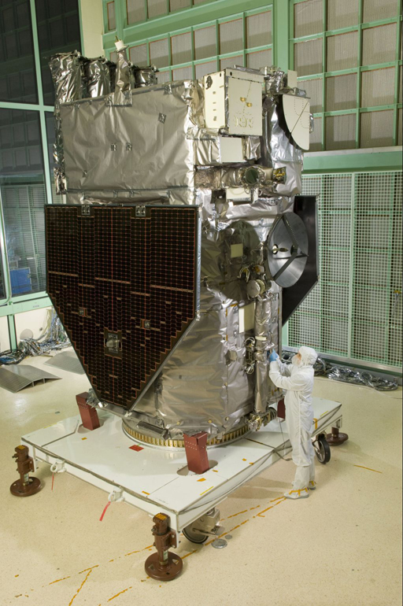
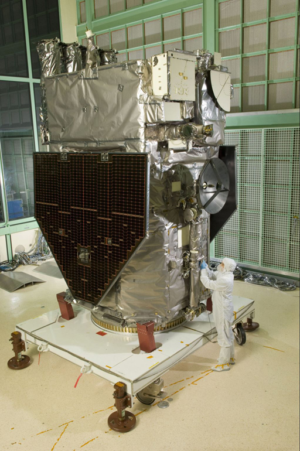
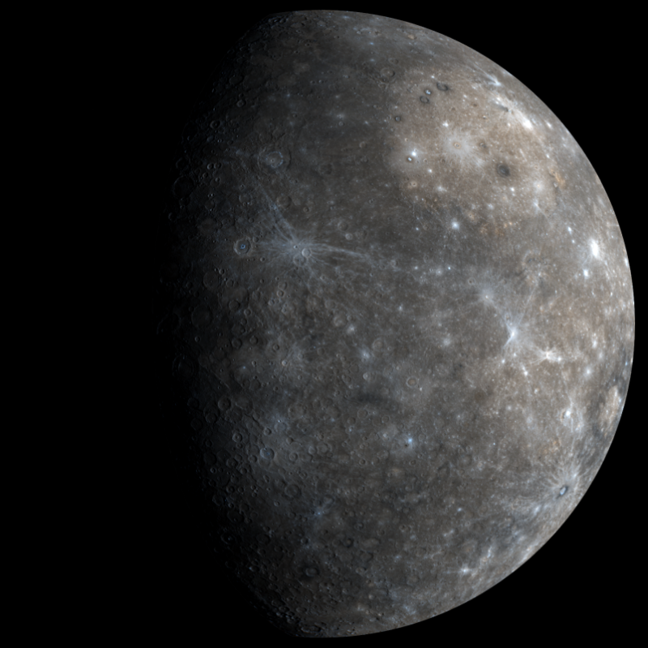
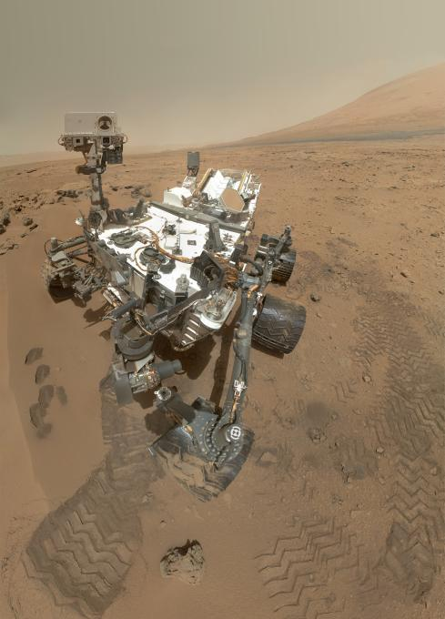
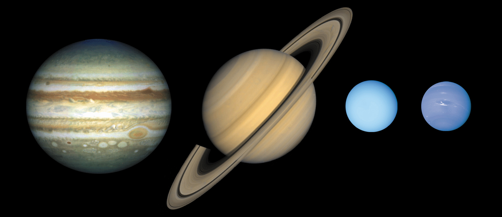
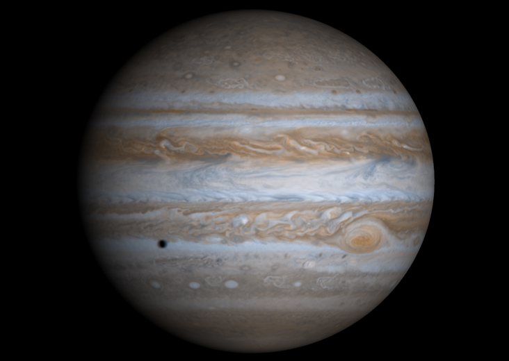
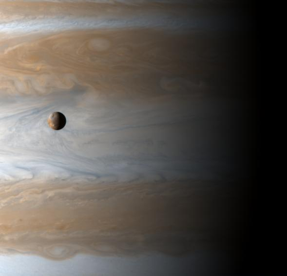
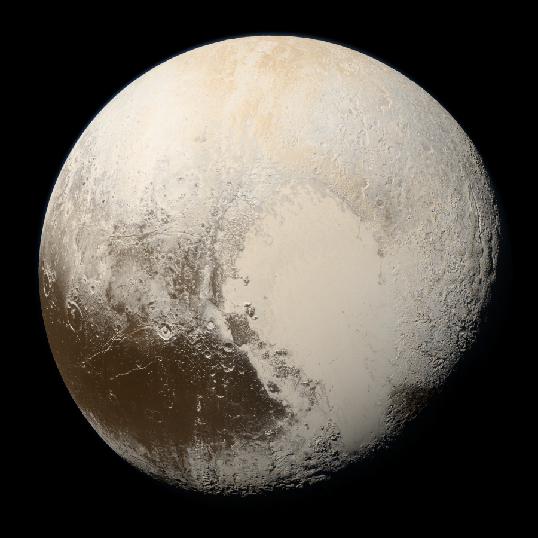

Exploration du système solaire
CEA Explorer et comprendre l’Univers
26 octobre 2020
Système solaire
- Planètes
- Corps sphérique
- En orbite autour du Soleil
- Qui a éliminé les autres corps de son entourage
- Astéroïde
- Petit corps (pas nécessairement sphérique)
- En orbite autour du Soleil
- Satellites
- Corps en orbite autour d’une planète ou d’un astéroïde
Système solaire
- Ceinture d’astéroïdes
- Entre Mars et Jupiter
- Grand nombre d’astéroïdes
- Ceinture de Kuiper
- Au-delà de Pluton (jusqu’à 120 UA)
- Grand nombre d’astéroïde
- Nuage de Oort
 (NASA)
(NASA)

@DoTryThisAtHome
Distribution de la masse
| Soleil |
99,80 |
| Planètes principales |
0,14 |
| Nuage de Oort |
0,05 |
| Ceinture de Kuiper |
0,001 |
| Astéroïdes, satellites, anneaux |
< 0,0001 |
| Mercure |
0,01 |
| Vénus |
0,18 |
| Terre |
0,22 |
| Mars |
0,02 |
| Jupiter |
71,14 |
| Saturne |
21,30 |
| Uranus |
3,26 |
| Neptune |
3,86 |
Température des planètes

Planètes telluriques
- Similaires à la Terre
- Densité : environ 5 g/cm3
- Mercure, Vénus, Terre, Mars
Planètes joviennes
- Similaires à Jupiter
- Densité : environ 1,4 g/cm3
- Jupiter, Saturne, Uranus, Neptune
Soleil
 (NASA/GSFC/SOHO)
(NASA/GSFC/SOHO)
Soleil
- Naine jaune de type G2
- 100 fois plus gros que la Terre
- 333 000 plus massif que la Terre
Soleil
- Température du coeur : 15,7 millions °C
- Fusion d’hydrogène
Éjections de masse coronale
(Solar Dynamics Observatory, NASA)
Missions d’exploration
 
(SOHO (ESA & NASA); NASA/SDO and the AIA, EVE and HMI science teams)

(SOHO (ESA & NASA); NASA/SDO and the AIA, EVE and HMI science teams)
Les planètes telluriques

Mercure

NASA/Johns Hopkins University Applied Physics Laboratory/Carnegie Institution of Washington
Mercure
| Distance au Soleil |
0,387 UA |
| Excentricité |
0,206 |
| Période de révolution |
88 jours |
| Période de rotation |
59 jours |
| Diamètre |
4878 km |
| Densité |
5,44 |
| Température |
430°C, -100°C, 167°C |
Mercure
- Planète la plus rapprochée du Soleil
- Vitesse orbitale moyenne la plus élevée : 48km/s
- Survolée par Mariner 10 et 1974 et 1975
- Messenger en orbite
Messenger
 NASA/Johns Hopkins University Applied Physics Laboratory/Carnegie Institution of Washington
NASA/Johns Hopkins University Applied Physics Laboratory/Carnegie Institution of Washington
Vénus
 NASA/Jet Propulsion Laboratory-Caltech
NASA/Jet Propulsion Laboratory-Caltech
Vénus
| Distance au Soleil |
0,723 UA |
| Excentricité |
0,007 |
| Période de révolution |
224,7 jours |
| Période de rotation |
243,01 jours |
| Diamètre |
12 104 km |
| Densité |
5,24 |
| Température |
477°C |
Vénus
- Astre le plus brillant dans le ciel après le Soleil et la Lune
- Nuages empêchent de voir sa surface
- Constitution interne très semblable à la Terre
Vénus
- Atmosphère
- Nuages d’acide sulfurique
- Effet de serre
Venera-13
 URSS
URSS
Vénus
- Semble avoir une activité tectonique
- Rotation rétrograde très lente
Terre

NASA/NSSDC
Lever de Terre tel que vu par les astronautes d’Apollo 8

NASA/NSSDC
Mosaïque prise par NEAR en 1998
Constitution interne de la Terre
| Diamètre équatorial |
12 756 km |
| Diamètre entre les pôles |
12 713 km |
| Masse |
5,58 × 1024 kg |
| Densité moyenne |
5,5 |
Constitution interne de la Terre
- Matériaux accessibles : densité d’environ 3
- Terre : densité moyenne de 5.5
- Les matériaux situés au centre de la Terre doivent être plus denses
Constitution interne de la Terre
- Centre de la Terre composé de fer et nickel
- Densité : 7.87 pour le fer, 8.91 pour le nickel
- Parmi les métaux les plus abondants dans l’Univers
Âge de la Terre
4,6 Ga
Même âge que le reste du système solaire
Magnétisme terrestre
- Champ magnétique qui protège du vent solaire
- Cause du champ magnétique : courant dans le noyau liquide (peut-être…)
Magnétisme terrestre
NASA/GSFC/SOHO/ESA
Magnétisme terrestre
- Particules chargées capturées par le champ magnétique
- Forment les ceintures de Van Allen
- Ceinture inférieure : protons et ions
- Ceinture supérieure : électrons
Aurores polaires

Aurores polaires

Aurores polaires

Atmosphère terrestre
- Mince couche autour du globe
- 75% de la masse à moins de 10 km d’altitude
Atmosphère terrestre
| Azote (\(\mathrm{N}_2\)) |
78% |
| Oxygène (\(\mathrm{O}_2\)) |
21% |
| Argon (Ar) |
0,93% |
| Eau (\(\mathrm{H}_2O\)) |
0 - 4% |
| Gaz carbonique (\(C\mathrm{O}_2\)) |
0,037% |
La Lune
- Mers formées il y a 3,3 à 3,8 Ga
- Il y avait une activité volcanique
- Hautes terres formées entre 4,2 et 4,4 Ga
- Pas de noyaux de fer
- Pas d’atmosphère
Naissance de la Lune
Hypothèse la plus plausible
- Collision entre Terre et objet de la taille de Mars
- Noyau de l’objet s’est intégré à celui de la Terre
- Restes de l’objet ont formé la Lune
Rotation de la Lune
- Période de rotation correspond à la période de révolution
- C’est un exemple de résonance gravitationnelle
Mars
 NASA and The Hubble Heritage Team (STScI/AURA)
NASA and The Hubble Heritage Team (STScI/AURA)
Mars

Mars
| Distance au Soleil |
1,524 UA |
| Excentricité |
0,093 |
| Période de révolution |
1,88 année |
| Période de rotation |
24h 37min 23s |
| Diamètre |
6794 km |
| Densité |
3,94 |
| Température |
20°C, -140°C, -40°C |
Missions d’exploration de Mars
Mars Global Surveyor
Cartographie (1997)

Spirit
Preuve qu’il y a eu de l’eau sur Mars (2004)
 NASA/JPL/Cornell
NASA/JPL/Cornell
Spirit
- Coincé dans le sable depuis 2009
- Fin de la mission en 2011
Opportunity
Preuve qu’il y a eu de l’eau sur Mars (2004)

NASA/JPL-Caltech/Cornell Univ./Arizona State Univ.
Curiosity

NASA/JPL-Caltech/Malin Space Science Systems
Curiosity
À la recherche de molécules organiques (2012)
 NASA
NASA
MAVEN
Pourquoi Mars a perdu son atmosphère (2014)

NASA/Kim Shiflett
Mars
- Atmosphère ténue (0,01 bar)
- Composée principalement de CO2 (95%)
- Glace sèche (CO2) et eau glacée
- Couleur orangée : rouille (oxyde de fer)
Mars
- Composition semblable à la Terre
- Croûte
- Hautes terres criblées de cratères
- Plaines volcaniques plus récentes
- Manteau
- Noyau métallique
Mars
- Pas d’activité tectonique
- Pas de chaînes de montagne
- Points chauds crachent toujours leur lave au même endroit
- Volcans gigantesques
Mont Olympus
- Plus haut volcan du système solaire
- Hauteur de 23 km (3 fois l’Éverest)
- Large de 600 km
Mont Olympus

NASA/JPL
Satellites de Mars
Phobos (27 km)

MRO || NASA/JPL-Caltech/University of Arizona
Satellites de Mars
Deimos (15 km)

MRO || NASA/JPL-Caltech/University of Arizona
Les planètes joviennes

NASA
Jupiter

Cassini (2011) | NASA/JPL/University of Arizona
Jupiter
| Distance au Soleil |
5,203 UA |
| Excentricité |
0,048 |
| Période de révolution |
11,86 années |
| Période de rotation |
9h 50min 30s |
| Diamètre |
142 800 km |
| Densité |
1,31 |
| Température |
-110°C |
Jupiter
- 70% de toute la masse des planètes
- 1400 fois plus volumineuse que la Terre
- 318 fois plus massive que la Terre
- À peine plus dense que l’eau
- Champ magnétique 17 000 fois plus grand que celui de la Terre
- Aplatissement de 6%
Jupiter
- Composition de la planète
- Hydrogène (78%)
- Hélium (20%)
- Ammoniac
- Hydrosulfide d’ammonium
- Eau
Jupiter
- Rotation différentielle
- Période de rotation équatoriale plus courte que la période de rotation des pôles
- Période de rotation de la surface plus courte que la période de rotation interne
Grande tache rouge
 Voyager 2 (1979) | NASA
Voyager 2 (1979) | NASA
 Juno (2017) | NASA/JPL-Caltech/SwRI/MSSS/Bjorn Jonsson
Juno (2017) | NASA/JPL-Caltech/SwRI/MSSS/Bjorn Jonsson
Grande tache rouge
- Grosse tempête
- Dure depuis au moins 350 ans
 Juno (2018) | Gerald Eichstädt and Sean Doran (CC BY-NC-SA) based on images provided courtesy of NASA/JPL-Caltech/SwRI/MSSS
Juno (2018) | Gerald Eichstädt and Sean Doran (CC BY-NC-SA) based on images provided courtesy of NASA/JPL-Caltech/SwRI/MSSS
Composition interne de Jupiter

Io

Cassini (2001) | NASA/JPL/University of Arizona
Satellites de Jupiter
- Io
- Ganymède
- Europe
- Callisto
- 75 autres petits satellites
Saturne
 Cassini | NASA
Cassini | NASA
Saturne
 Cassini | NASA
Cassini | NASA
Saturne
 Cassini | NASA/JPL/Space Science Institute
Cassini | NASA/JPL/Space Science Institute
Saturne
| Distance au Soleil |
9,54 UA |
| Excentricité |
0,056 |
| Période de révolution |
29,46 années |
| Période de rotation |
10h 13min 59s |
| Diamètre |
120 000 km |
| Densité |
0,7 |
| Température |
-180°C |
Saturne
- Composée d’hydrogène et d’hélium
- Champ magnétique 500 fois plus grand que celui de la Terre
- Axe de rotation incliné (saisons)
- Aplatissement de 10%
Anneaux de Saturne
- Composés principalement de glace
- 1 km d’épaisseur
Uranus
 Voyager 2 (1986) | NASA
Voyager 2 (1986) | NASA
Uranus
| Distance au Soleil |
19,19 UA |
| Excentricité |
0,046 |
| Période de révolution |
84,04 années |
| Période de rotation |
16,5h |
| Diamètre |
51 120 km |
| Densité |
1,3 |
| Température |
-221°C |
Uranus

Uranus
- Planète couchée
- Atmosphère contient du méthane qui absorbe le rouge
- Possède des anneaux
- 27 satellites
Neptune

Neptune
| Distance au Soleil |
30,06 UA |
| Excentricité |
0,010 |
| Période de révolution |
164,8 années |
| Période de rotation |
18 h |
| Diamètre |
49 528 km |
| Densité |
1,66 |
| Température |
-230°C |
Neptune
- Composition interne très semblable à Uranus
- Inclinaison de l’axe de rotation de 30°
- Phénomènes atmosphériques probablement dus à la production d’énergie par contraction gravitationnelle
Pluton

NASA/Johns Hopkins University Applied Physics Laboratory/Southwest Research Institute/Alex Parker